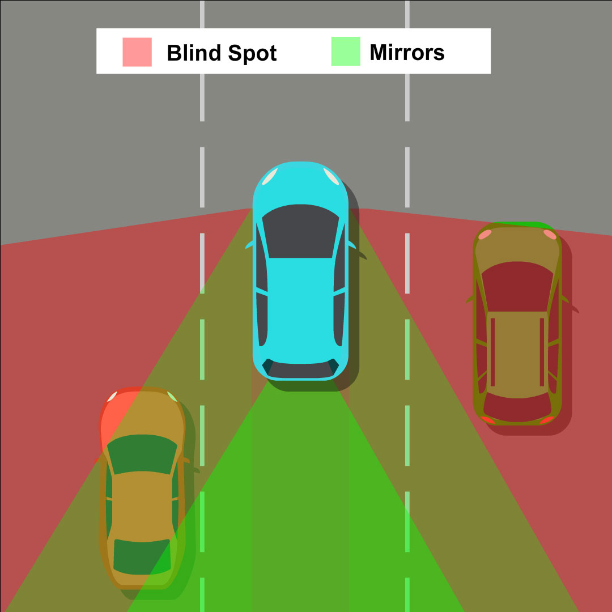

Auto Theorie – Jouw Auto
Dode hoek
De dode hoek is het gebied naast of achter je voertuig dat je met spiegels niet direct kunt zien. Vooral bij vrachtwagens is dit gebied veel groter dan bij personenauto’s. Blijf extra alert op kwetsbare weggebruikers in de rechter zijkant van je voertuig.

Controle vóór rijden
Voordat je weg rijdt, controleer je:
- Binnenspiegel
- Buitenspiegels
- Linker dode hoek (via over je schouder kijken)
Is alles vrij? Dan mag je richting aangeven en soepel wegrijden.
Gordels & zitplaatsen
- Bestuurders en passagiers moeten altijd een autogordel gebruiken.
- Er mogen niet meer passagiers in de auto zitten dan er gordels zijn.
- Slechts één persoon per gordel toegestaan.
- Kinderen vanaf 1,35 m en volwassenen moeten driekruisgordels dragen.
- Het diagonale gordedeel mag niet onder de arm of achter de rug lopen.
Uitzonderingen wanneer je geen kinderzitje hoeft te gebruiken
Er zijn uitzonderingen waarbij het wel is toegestaan om een kind met een lengte van minder dan 1,35 meter in een autogordel te vervoeren, zonder gebruik te hoeven maken van een kinderbeveiligingssysteem. Het kind moet 3 jaar of ouder zijn en:
- Er zijn al twee kinderbeveiligingssystemen in gebruik genomen en er is geen plaats meer is voor een derde.
- Of het kind wordt in een incidenteel geval over een korte afstand vervoerd door iemand anders dan de ouder, waarvan redelijkerwijs niet kan worden verwacht dat die persoon beschikt over een kinderbeveiligingssysteem.
Kinderzitje of kinderbeveiligingssysteem
- Kinderen onder de 18 jaar en kleiner dan 1,35 meter moeten worden vervoerd in een kinderbeveiligingssysteem dat is voorzien van een keurmerk.
- Kinderen in een achterstevoren geplaatst kinderzitje mogen niet worden geplaatst bij een (geactiveerde) airbag. Het kind kan ernstig gewond raken als de airbag openklapt.
Hoofdsteun
De voornaamste functie van een hoofdsteun is het beschermen van je hoofd en nek bij een botsing. Een hoofdsteun is juist afgesteld wanneer de bovenkant ervan zich op gelijke hoogte bevindt met de bovenkant van je hoofd. Idealiter is de afstand tussen het hoofd en de hoofdsteun zo klein mogelijk. Als de hoofdsteun niet goed is afgesteld, biedt deze onvoldoende bescherming voor je nek en hoofd bij een aanrijding. Daarom is het van groot belang dat de hoofdsteun voor elke inzittende correct is ingesteld.
Steenslag
Steenslag wordt veroorzaakt door grind en kleine steentjes die door de banden van je voorligger tegen het raam of de lak van je auto worden aangeschoten.
Zelfs hele kleine steentjes kunnen schade aanrichten, vooral bij hoge snelheden.
Als de steenslag moelijk voorkomen, maar de kans wel verkleinen:
- Houd voldoende afstand van je voorligger.
- Bij winterse omstandigheden kan er vorstschade aan het wegdek ontstaan, hierdoor breken korreltjes asfalt los van het wegdek.
Klapband
Een klapband is een situatie waarin een band plotseling beschadigd raakt en snel leegloopt.
Zo’n klapband kan bijvoorbeeld ontstaan door over een scherp voorwerp of een stoeprand te rijden. Toch is een te lage bandenspanning de voornaamste oorzaak van een klapband bij personenauto’s. Een zachte band rekt namelijk uit onder het gewicht van de auto, wat zorgt voor extra wrijving tijdens het rijden. Hierdoor wordt het rubber warm en vervormt het, wat de band verzwakt en uiteindelijk kan laten barsten. Ook overbelasting, slijtage of een slecht wegdek kunnen bijdragen aan het ontstaan van een klapband.